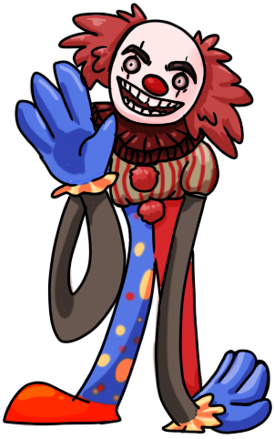
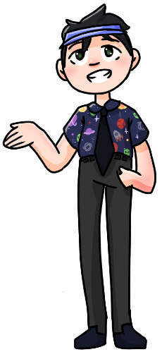
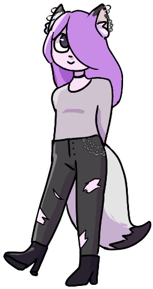
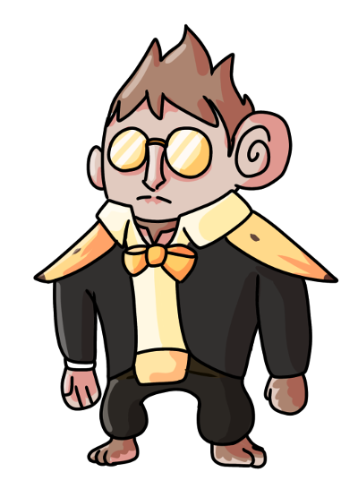
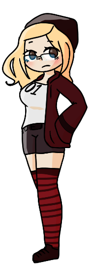

AmAm's Information
Name: Anne Milly Almond Milk(Am Am)
Gender: Girl(probably)
Species: equine human
Age: 5000
Bio: She grew up in a ranch house with 4 other siblings.
All her other siblings had a different father. She is used
to blood cause he mother was a butcher
Personality: Bubbly, and nice. Loves apples and hate bananas
(she thinks that look stupid and she hates the color yellow).
Appearance: 4'6 and 75 lbs. She has horse ears and he irises
are shaped like apples and her pupils are shaped like apples
seeds. Her hair is dark brown and she wears it in two short
braids. And she looks about 12-14. She wears a bright red
off the shoulder sweater with a light green tank top underneath.
She wears a light brown maxi skirt that is slightly darker
at the bottom (stained from mud). And wears brown flats.
Talents/Skills: Can run really fast, and can carry 2 times
her body weight.
Strengths: If she eats and apple grown from Francisco, she can
carry 4 times her body weight. Can turn into a centaur but that's
the most horse she can be. Amazing at baking but godly at baking
apple pie and other apples treats.
Weaknesses: Deathly allergic to nuts and bananas. And (not deathly)
allergic to latex and dogs(and most other animals except farm
animals(cows, sheep, pigs, chickens, and horses). Has an awful
tendency to vomit when she gets too excited, angry, or stressed.
Dating: (Previously)An apples tree named Francisco Vázquez de Coronado
Amam

Chase(Demon Prince) Chasington's Information
Name: chase chasington
Gender:male
Species: demon (royality)
Age: 15000000
Bio: young handsome man very hot and sexy yet a horrible
personality that drives women away longs to be a rebellious spirit so he
refuses to take the thrown despite being the only worthy heir he is into
making tiktok thirst trap videos and hanging out with his best friend
mr morris he loves fishing and other dad like activities
Personality:hot headed, charming, smart, impulsive
Appearance: 6ft light brown skin, two sets of horns ram and
standard demon horns, standard black suit with a red undershirt, very long
braided hair, has the posture of a shrimp ü¶ê red eyes
Talents/Skills: can summon demons , fire, very good with
his homemade pistol with a knife attached to it
Strengths: super strong, sexy,
Weaknesses: anger issues, total slob, allergic to water
(will die)
dating: n/a üò≠üò≠
Demon Prince

Chuckles's Information
Name: Chuckles
Gender: Clown
Species: Clown
Age: clown age
Bio: Chuckles the clown has dedicated his life to spreading joy and
positivity through whatever means necessary
Personality: Very cheerful and jovial, bubbling with excitement.
Slightly unhinged
Appearance: 7 foot 8 string bean of a man with wacky fun proportions,
arms that reach ankles, short torso and super long legs, backwards knees, caked in clown
makeup, pixie dust and everything that makes people happy blush, fiery red hair that
extends 3 feet on each side of his head
Talents: juggling, magic tricks, balloon animals, making children laugh,
manslaughter
Weaknesses: cannot stand the color yellow, hates old people, makes
extremely dated references insatiable bloodlust
Dating: (formerly Latisha the Elephant) Currently dating an old friend
from his circus days, Roxanne the clown.
Chuckles
Clyde Pogsdale's Information
Name: Clyde Pogsdale
Gender: Male(Most likely)
Species: Reindeer Animorph
Age: 2
Bio: A young man with strapping looks and thick antlers. He has
laterhosen and a funny hat shaped like a upright pentagon. His fur is light brown
and his eyes are large, black, and sparkly. He constantly mumbles about the people
in black, wondering if they are there around every corner. He is a paranoid and
frantic person, often acting on cowardly impulses. Despite his fears, he often
sympathizes with others and their troubles and listens to them. He loves a good soak
in a hot maple syrup bath, and long Razor scooter rides on the beaches. He works as
a car warranty salesman and will do anything for you to sign his check. Contact him
at 1-800-CLOGS.
Personality: See above ^ I didn’t know the difference between bio
and personality
Appearance: 1 and 1/2 feet of pure screaming chaos, he usually
screams at anything mildly scary or Femboys. He’s scared of mirrors. He’s a femboy
on weekends.
Talents/Skills: Origami
Strengths: He can lift 20 pounds of rubber ducky in both hands,
his strong fear of many things has made him a super Olympic athlete, capable of running
faster than [REDACTED].
Weaknesses: Everything except origami and speeding
Dating: A pinecone named Caroline
Clyde Pogsdale

Mr. Morris's Information
Name: Mr. Morris
Gender: Man
Species: Humans
Age: 37
Bio: Works in an office.
Putting in those hours.
Loves helping his company save on their taxes.
Personality: Fun loving guy, but don't let that fool ya! When it
comes to getting the work done, Mr morris will always be there to solve your tax needs~
Always is looking for the best deals for his three wonderful children. They mean
the world to him, and he makes sure they know that with their wealthy college funds.
He will do anything for those stinkers! He loves to post funny MEMES about his
silly wife!
Appearance: 5'8' and scrawny. Always has a fun button up! Growing some
grays (Oh no!) Wears a golf visor when not working
Talents/Skills: Amazing at taxes, once saved his company 750K in one
month!!!
Loved by his boss, may even become the VP if he is lucky.
Avid pog collector, loved them since he was a little lad, but don't tell his wife!
Loves his three kids: Caden, Kenny, and Jenn!
Some say he is a hard worker, but he feels like he has never worked a day in his life
(He LOVES TAXES)
Sometimes goes a little wacky.
Mediocre at golfing
Strengths:
Weaknesses: He hates to admit it, but all these years helpin' with
taxes has taken a TAX on his body! He can't run or lift like he use to...
Dating: His wonderful wife! Sorry ladies, but this youthful spirit
is taken!
Mr. Morris
Violet's Information
Name:Violet
Gender: female
Species: Mef'wa or Nekomimi (cat person)
Age:18
Bio: I like to run in the woods like am bisexual I love walking through felds of flowers and meditating in the sun
Personality: shy, but once you get to know me I love to tell stories and listen to your stories and even your problems and I'll help you try to find a solution
Appearance: I have white long fur cat ears with black just on the point with light purple hair that's coppy and go's to me shoulders and a long furry tail that's white with black at the end I dress in black riped jeans and a crop top purple hoodie that hangs of my shoulders and it covers my hand s that I wear studed black fingerless gloves and black platform boots that go to the knee I'm short like 5foot 3inches
Talents: I can run vary fast and I can jump really high and can tell what people are thinking
Strengths: running and jumping
Weaknesses: not a very good swimmer
Dating: single but [REDACTED]
Violet
L. B. Thunderbottom's Information
Name: Ludex Bombardier Thunderbottom (L. B. Thunderbottom)
Gender: male
Species: Evolved Chimpanzee
Age: 32
Bio: L. B. Thunderbottom is a chimpanzee experiment. In essence,
the experiment was forced evolution. He became a chimp capable of communicating
with both chimps and humans perfectly. Though, Thunderbottom was not happy with
being trapped in a facility to be experimented on, so he and his primitive brethren
escaped haphazardly. Stealing military-grade vehicles and weapons, they became a
force to be reckoned with.
Personality: Tries to look smart even though he has below average
IQ, enjoys eating jam with bananas, gullible, uses unnecessary amounts of violence
and warfare to solve problems, fantastic leader and tactician, very tame mild with
random bursts of savagery.
Appearance: (see picture)
Talents/Skills: Tactical, great with weapons, leadership, immense
strength (he is a super chimp), expert at climbing, best at most athletic activities,
hiding in car trunks, sniffing flowers, playing the organ really well, can squeeze
his buttcheeks so fast it breaks the sound barrier.
Strengths: has a heavily armed clan of chimpanzees + (see talents\skills)
Weaknesses: has a heavily armed clan of chimpanzees, beans.
Dating: a custom-made M61 Vulcan machine gun named Atsuko-chan.
L. B. Thunderbottom
Zylie Lann's Information
Name: Zylie Lann
Gender: female
Species: human
Age: 16
Bio: don't ask, don't care
Personality: [REDACTED]
Appearance: Human. Give her the hourglass figure with blonde hair and brown
eyes. Tomboy clothes. Shorter than most but not short. Deceiving
Talents: athletically good in just about anything. Decent singer.
(No, she won't let you hear)
Strengths: up to 300 pounds hehe
Weaknesses: who wants to know?
Dating: not
Zylie Lann
Princess's Information
Name: Princess
Gender: Female
Species: Werewolf
Age: 19
Bio: Pansexual
Personality: Cheerful, hyper, short attention span, has a bad attitude sometimes, very curious, kinda dumb, sometimes flirty.
Appearance: 5”7’, has light brown thick hair that’s usually messy that goes down to her butt. She wears a little plastic
tiara she got when she was a child. She wears a black skirt and pink shirt. Pretty busty. Big floofy tail. Her right eye is green and her
left eye is brown.
Talents/Skills: Strength, fast, good at catching.
(No, she won't let you hear)
Strengths: Catching things and running fast. Also good at lifting heavy things.
Weaknesses: Water, squirrels, balls, shiny objects. Doesn’t know her own strength.
Dating: none